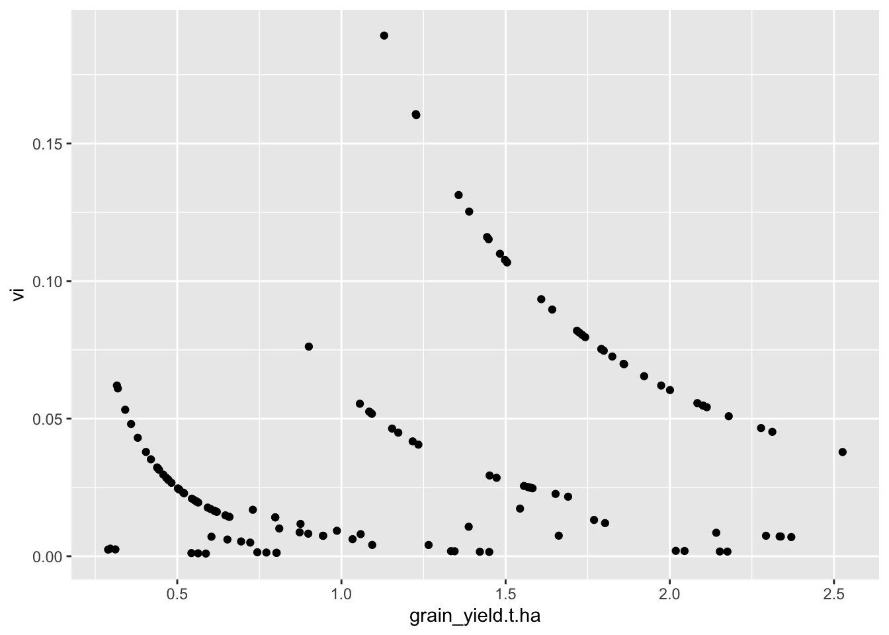
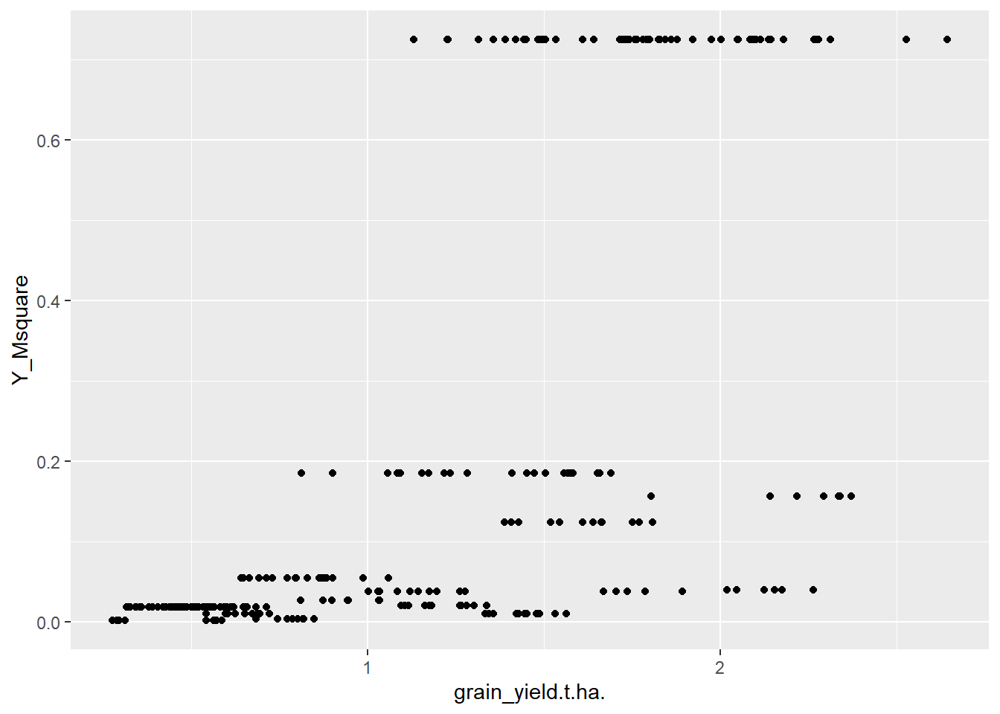
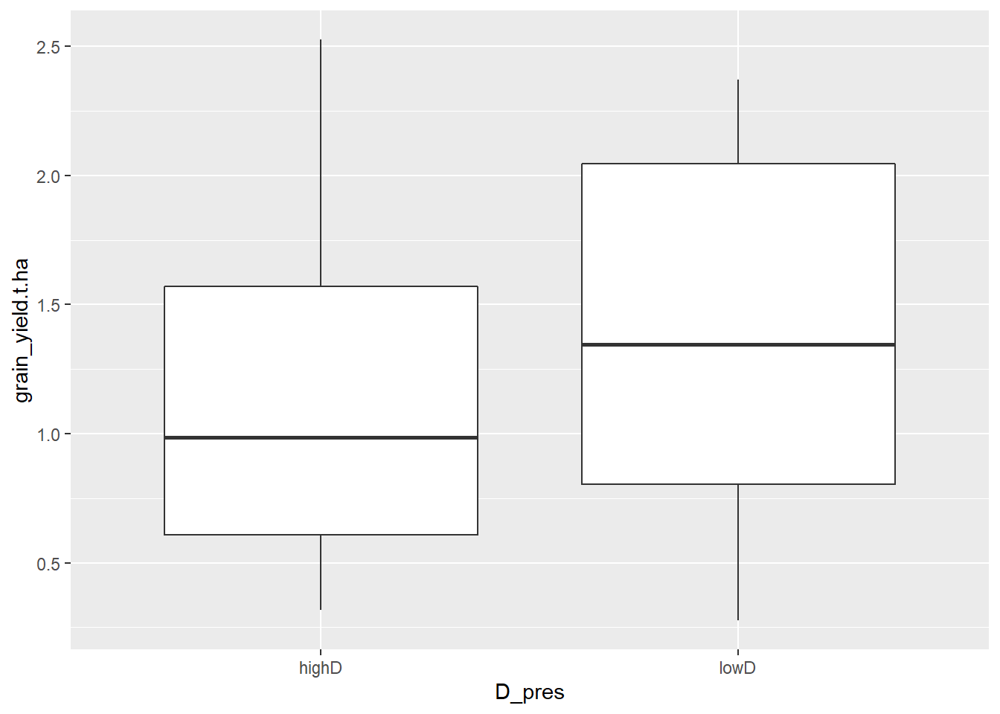

4 Prepare data for meta-analysis
4.1 Set environment and import data
4.2 Standardising sample variance
Meta-analyses use variance from the data to calculate the effect sizes. The type of variance needs to be the same across all the data incorporated in the meta-analysis.
We are narrowing the meta-analysis to only include treatments using demethylation inhibitors, tebuconazole and propiconazole. Let’s look at what type of statistical error was reported for the trials that used these fungicides.
PM_MB_means %>%
filter(fungicide_ai == "tebuconazole" |
fungicide_ai == "propiconazole") %>%
group_by(trial_ref, location, year , Y_error_type, fungicide_ai) %>%
summarise(DMI_treatments = length(Y_error_type)) %>%
arrange(Y_error_type) %>%
select(!fungicide_ai) %>%
kable(caption = "Number of treatments for each trial and the error type reported", align = "c") %>%
footnote(general = "DMI - demethylation inhibitors (tebuconazole and propiconazole).")| trial_ref | location | year | Y_error_type | DMI_treatments |
|---|---|---|---|---|
| mung1112/02 | Kingaroy | 2012 | lsd (P=0.05) | 4 |
| mung1112/02 | Kingaroy | 2012 | lsd (P=0.05) | 2 |
| AM1303 | Premer | 2013 | stdev | 3 |
| AM1304 | Marys Mount | 2013 | stdev | 3 |
| AM1305 | Goolhi | 2013 | stdev | 3 |
| BB1305 | Millmerran | 2013 | stdev | 3 |
| mung1011/01 | Hermitage | 2011 | stdev | 2 |
| mung1011/02 | Kingaroy | 2011 | stdev | 6 |
| mung1415/01 | Hermitage | 2015 | stdev | 5 |
| mung1516/01 | Hermitage | 2016 | stdev | 6 |
| mung1516/02 | Kingaroy | 2016 | stdev | 6 |
| mung1617/01 | Hermitage | 2017 | stdev | 15 |
| mung1617/01 | Hermitage | 2017 | stdev | 15 |
| mung1617/02 | Missen Flats | 2017 | stdev | 15 |
| mung1617/02 | Missen Flats | 2017 | stdev | 15 |
| mung1718/01 | Wellcamp | 2018 | stdev | 6 |
| mung1718/01 | Wellcamp | 2018 | stdev | 6 |
| mung1819/01 | Hermitage | 2019 | stdev | 3 |
| mung1819/02 | Hermitage | 2019 | stdev | 3 |
| mung1112/01 | Gatton | 2012 | NA | 4 |
| mung1112/01 | Gatton | 2012 | NA | 2 |
| mung1516/03 | Emerald | 2016 | NA | 6 |
| Note: | ||||
| DMI - demethylation inhibitors (tebuconazole and propiconazole). |
The experiment summaries report either standard deviation, least square differences or no error term (NA).
First we will convert LSD and standard deviation to sample variance.
Then we will impute variances for the trials, which did not report any form of variance (NA).
4.2.1 Converting least-squares to sample variance
First let’s get a list the of trials that reported LSD.
Trials <- PM_MB_means %>%
filter(Y_error_type == "lsd (P=0.05)") %>%
select(trial_ref) %>%
distinct()
Trials## trial_ref
## 1 mung0001/01
## 2 mung1112/02Let’s use this list of trials to subset the data and calculate sampling variances.
We will follow the method of converting ‘least square differences’ (LSD) to sampling variance reported by Nugugi et.al (2011). A table of T-critical values was consulted to select the T-crit value in the equation. Our data contained 30 degrees of freedom which equates to a ‘T-crit’ value of 1.697.
Calculating sampling variance from mean squared error Paul et al. (2008)
Tcrit is the T critical value for which there is significant difference between two groups.
This value is the same for both trials “mung1112/01” and “mung1112/02”.
Tcrit <- 1.697 # 0.05 and DFw = 30
for (i in Trials$trial_ref) {
DFw <-
sum(PM_MB_means[PM_MB_means$trial_ref == i, ]$replicates) -
length(PM_MB_means[PM_MB_means$trial_ref == i, ]$replicates) # degrees of freedom within groups
LSD <-
PM_MB_means[PM_MB_means$trial_ref == i, ]$yield_error[1]
V_yield <-
(PM_MB_means[PM_MB_means$trial_ref == i, ]$replicates[1] *
(LSD / Tcrit) ^ 2) / 2
# method - Nugugi et.al (2011) DOI: 10.1094/phyto-08-10-0221
for (j in seq_along(PM_MB_means[PM_MB_means$trial_ref == i,]$replicates)) {
if (j == 1) {
Sv <-
vector(length = length(PM_MB_means[PM_MB_means$trial_ref == i,]$replicates))
} # reset Sv vector if this is the first loop
Sv[j] = V_yield /
PM_MB_means[PM_MB_means$trial_ref == i,]$replicates[j]
}
# Replace the values in the dataset
PM_MB_means[PM_MB_means$trial_ref == i,]$yield_error <-
Sv
PM_MB_means[PM_MB_means$trial_ref == i,]$Y_error_type <-
"SamplingVariance"
}4.2.2 Converting standard deviation to sample variance
Now to estimate the variance from the standard deviation.
# subset data by those which describe the Yield error with standard deviation
Trials <- PM_MB_means %>%
filter(Y_error_type == "stdev") %>%
select(trial_ref) %>%
distinct()
# calculate the Sampling variance from the standard deviation
# standard error of the mean equals the standard deviation divided by the square
# root of the number of samples
# Sv <- sem^2 <- stdev/sqrt(n)
# Sampling variance equals the square of the standard error.
# Sv <- (stdev/sqrt(n))^2
# Therefore
for (j in seq_along(PM_MB_means[PM_MB_means$trial_ref %in% Trials$trial_ref,]$yield_error)) {
if (j == 1) {
Sv <-
vector(length = length(PM_MB_means[PM_MB_means$trial_ref %in% Trials$trial_ref,]$yield_error))
}# create empty vector at first iteration with length of j
Sv[j] = (PM_MB_means[PM_MB_means$trial_ref %in% Trials$trial_ref,]$yield_error[j]) ^ 2
}
# and replacing the values in the dataset
PM_MB_means[PM_MB_means$trial_ref %in% Trials$trial_ref,]$yield_error <-
Sv
PM_MB_means[PM_MB_means$trial_ref %in% Trials$trial_ref,]$Y_error_type <-
"SamplingVariance"4.2.3 Check variance of data-set
Our data currently uses sample variance to define the yield error. We should expect that when yield increases so does the variance. Let’s quickly plot this to check.
# redefine sample variance calculated from mean square
PM_MB_means$vi <-
PM_MB_means$Y_Msquare /
(PM_MB_means$n)
PM_MB_means %>%
ggplot(aes(x = grain_yield.t.ha., y = vi)) +
geom_point()## Warning: Removed 104 rows containing missing values (geom_point).
We see here that the sample variance generally decreases or has no association with the grain yield. This might be due to the unpredictable nature of mungbeans, however going forward we will use mean squares, which defines between trial variation and is the more generic error term.
## Warning: Removed 104 rows containing missing values (geom_point).
4.3 Reduce data set to required variables
Let’s tidy up the data set into a data frame of only the variables, which are required for the analysis.
First remove the irrelevant columns/variables.
Then calculate fungicide application timing variables relative to the first sign of disease.
Entries with NA in the grain yield or powdery mildew severity are also removed from the data.
source("R/slimming_PM_dat.R") # see R script for the code, which reduces the data.
slim_PM_dat %<>%
mutate(fungicide_timing_1 = fungicide_application_1 - first_sign_disease) %>%
mutate(fungicide_timing_2 = fungicide_application_2 - fungicide_application_1) %>%
mutate(fungicide_timing_3 = fungicide_application_3 - fungicide_application_2) %>%
filter(!is.na(grain_yield.t.ha)) %>%
filter(!is.na(PM_final_severity))4.3.1 Cluster fungicide applications
We are going to define ‘fungicide application timing’ as a categorical variable, relative to the first sign of powdery mildew.
These categorical variables are named:
Early: First fungicide application was prior to first sign of disease.
Recommended: First fungicide application was applied on the day powdery mildew was observed, or within three days of first sign.
Late: First fungicide application was four or more days after first sign of disease being observed. Follow up fungicide applications (cluster_2 and cluster_3) were also categorised as either early, recommended or late.
slim_PM_dat %<>%
mutate(
cluster_1 = case_when(
fungicide_timing_1 < 0 ~ "Early",
fungicide_timing_1 >= 0 &
fungicide_timing_1 < 4 ~ "Recommended",
TRUE ~ "Late"
)
) %>%
mutate(
cluster_2 = case_when(
is.na(fungicide_timing_2) ~ NA_character_,
fungicide_timing_2 < 13 ~ "Early",
fungicide_timing_2 >= 13 &
fungicide_timing_2 < 17 ~ "Recommended",
TRUE ~ "Late"
)
) %>%
mutate(
cluster_3 = case_when(
fungicide_timing_3 < 14 ~ "Early",
is.na(fungicide_timing_3) ~ NA_character_,
TRUE ~ "Recommended"
)
)Let’s look at these clusters to see where we have the most degrees of freedom.
clusters <-
unique(slim_PM_dat[c("cluster_1", "cluster_2", "cluster_3")])
for (i in 1:nrow(clusters)) {
if (i == 1) {
clusters$n <- NA
clusters$n_x_trial <- NA
}
clusters[i, "n"] <-
nrow(slim_PM_dat[same(slim_PM_dat$cluster_1, clusters[i, "cluster_1"]) &
same(slim_PM_dat$cluster_2, clusters[i, "cluster_2"]) &
same(slim_PM_dat$cluster_3, clusters[i, "cluster_3"]),])
clusters[i, "n_x_trial"] <-
length(unique(slim_PM_dat[same(slim_PM_dat$cluster_1, clusters[i, "cluster_1"]) &
same(slim_PM_dat$cluster_2, clusters[i, "cluster_2"]) &
same(slim_PM_dat$cluster_3, clusters[i, "cluster_3"]),
"trial_ref"]))
}
knitr::kable(clusters)| cluster_1 | cluster_2 | cluster_3 | n | n_x_trial | |
|---|---|---|---|---|---|
| 1 | Late | NA | NA | 57 | 17 |
| 2 | Recommended | NA | NA | 32 | 15 |
| 9 | Recommended | Late | NA | 12 | 4 |
| 11 | Early | Late | Early | 2 | 1 |
| 15 | Recommended | Recommended | NA | 30 | 10 |
| 30 | Recommended | Late | Early | 1 | 1 |
| 33 | Recommended | Early | NA | 1 | 1 |
| 34 | Recommended | Early | Early | 1 | 1 |
| 36 | Early | NA | NA | 13 | 3 |
| 37 | Early | Late | NA | 1 | 1 |
| 38 | Early | Late | Recommended | 1 | 1 |
| 42 | Recommended | Recommended | Recommended | 1 | 1 |
| 44 | Early | Recommended | Recommended | 1 | 1 |
| 48 | Late | Recommended | NA | 6 | 4 |
| 59 | Late | Recommended | Recommended | 2 | 2 |
| 148 | Late | Late | NA | 12 | 1 |
From this we can see that there are 16 different cluster combinations, which would make the analysis too difficult. We will reduce this to 6 levels within one variable.
Single sprays of either:
early,
recommended timing,
late.
Two or more sprays where the first spray was either:
early,
recommended timing,
late.
slim_PM_dat <- slim_PM_dat %>%
mutate(
spray_management = case_when(
fungicide_timing_1 < 0 &
is.na(fungicide_application_2) &
is.na(fungicide_application_3) ~ "Early",
fungicide_timing_1 >= 0 &
fungicide_timing_1 < 4 &
is.na(fungicide_application_2) &
is.na(fungicide_application_3) ~ "Recommended",
fungicide_timing_1 >= 4 &
is.na(fungicide_application_2) &
is.na(fungicide_application_3) ~ "Late",
fungicide_timing_1 < 0 &
!is.na(fungicide_application_2) ~ "Early_plus",
fungicide_timing_1 >= 0 &
fungicide_timing_1 < 4 &
!is.na(fungicide_application_2) ~ "Recommended_plus",
fungicide_timing_1 >= 4 &
!is.na(fungicide_application_2) ~ "Late_plus",
TRUE ~ "Other"
)
)
slim_PM_dat[slim_PM_dat$fungicide_ai == "control",
c(
"fungicide_timing_1",
"fungicide_timing_2",
"fungicide_timing_3",
"spray_management"
)] <- "control"Now to view the number break-down of the spray_management treatments
##
## control Early Early_plus Late
## 40 13 5 17
## Late_plus Recommended Recommended_plus
## 20 32 46There are few ‘Early_plus’ treatments, these treatments therefore will have too few comparisons with other treatments in the meta-analysis to provide accurate results. Therefore we will remove ‘Early_plus’ from the analysis.
4.4 Test dose effect
Earlier we noted there were different doses of propiconazole, which might influence our analysis.
Let’s check this by comparing a linear mixed effect model including and excluding dose.
We already have a factor breaking down the dose in the trial variable.
Let’s make a new one without dose.
slimmer_PM_dat$trial_noDose <- paste(slimmer_PM_dat$trial_ref, slimmer_PM_dat$year,
slimmer_PM_dat$location,slimmer_PM_dat$host_genotype,
slimmer_PM_dat$row_spacing,sep = "_")
cbind(Dose = head(slimmer_PM_dat$trial),
NoDose = head(slimmer_PM_dat$trial_noDose)) %>%
kable()| Dose | NoDose |
|---|---|
| mung1011/01_2011_Hermitage_Berken_0.75_lowDose | mung1011/01_2011_Hermitage_Berken_0.75 |
| mung1011/01_2011_Hermitage_Berken_0.75_lowDose | mung1011/01_2011_Hermitage_Berken_0.75 |
| mung1011/01_2011_Hermitage_Crystal_0.75_lowDose | mung1011/01_2011_Hermitage_Crystal_0.75 |
| mung1011/01_2011_Hermitage_Crystal_0.75_lowDose | mung1011/01_2011_Hermitage_Crystal_0.75 |
| mung1011/02_2011_Kingaroy_Berken_0.75_lowDose | mung1011/02_2011_Kingaroy_Berken_0.75 |
| mung1011/02_2011_Kingaroy_Crystal_0.75_lowDose | mung1011/02_2011_Kingaroy_Crystal_0.75 |
Let’s test the dose effect in a basic linear mixed effect model.
m1 <-
lmer(log(grain_yield.t.ha * 1000) ~ factor(spray_management) +
(1 | trial),
data = slimmer_PM_dat)
m2 <-
lmer(log(grain_yield.t.ha * 1000) ~ factor(spray_management) +
(1 | trial_noDose),
data = slimmer_PM_dat)
anova(m1, m2)## refitting model(s) with ML (instead of REML)## Data: slimmer_PM_dat
## Models:
## m1: log(grain_yield.t.ha * 1000) ~ factor(spray_management) + (1 |
## m1: trial)
## m2: log(grain_yield.t.ha * 1000) ~ factor(spray_management) + (1 |
## m2: trial_noDose)
## npar AIC BIC logLik deviance Chisq Df Pr(>Chisq)
## m1 8 -21.404 3.588 18.702 -37.404
## m2 8 -60.156 -35.165 38.078 -76.156 38.753 0 < 2.2e-16 ***
## ---
## Signif. codes: 0 '***' 0.001 '**' 0.01 '*' 0.05 '.' 0.1 ' ' 1Using the model without dose produces a lower AIC, however we should accept the data with dose as there is a significant difference between the models and we should accept the more complicated model m1.
We will retain dose as a variable inside the trial factor.
4.5 Disease pressure factor
We may wish to investigate the impact of spray management in mitigating the yield loss through the effect on the disease pressure.
We will set a categorical variable to indicate the amount of disease pressure in the trial, which will be evaluated on the control plot.
We will create two categories, lowD and highD.
We will use the median AUDPC to separate the trials into these two groups.
slimmer_PM_dat$D_pres <- NA_character_
Trial_Dpress <- slimmer_PM_dat %>%
group_by(trial_ref) %>%
filter(fungicide_ai == "control") %>%
summarise(AUDPC_C = mean(AUDPC_m, na.rm = TRUE))
median_AUDPC <-
median(as.vector(Trial_Dpress$AUDPC_C), na.rm = TRUE)
median_AUDPC## [1] 153.625write.csv(median_AUDPC, here("cache/median_AUDPC_C.csv"), row.names = FALSE)
sort(Trial_Dpress$AUDPC_C)## [1] 24.50000 40.25000 41.00000 47.12500 77.00000 78.33333 82.60000
## [8] 119.62500 153.62500 161.00000 169.00000 172.00000 192.08333 196.00000
## [15] 198.72222 228.37037 239.61111for (i in unique(slimmer_PM_dat$trial_ref)) {
if (is.na(Trial_Dpress[Trial_Dpress$trial_ref == i, "AUDPC_C"])) {
next()
}
if (Trial_Dpress[Trial_Dpress$trial_ref == i, "AUDPC_C"] < median_AUDPC)
{
slimmer_PM_dat[slimmer_PM_dat$trial_ref == i, "D_pres"] <- "lowD"
} else{
if (Trial_Dpress[Trial_Dpress$trial_ref == i, "AUDPC_C"] >= median_AUDPC) {
slimmer_PM_dat[slimmer_PM_dat$trial_ref == i, "D_pres"] <- "highD"
} else{
slimmer_PM_dat[slimmer_PM_dat$trial_ref == i, "D_pres"] <-
NA_character_
}
}
}Let’s have a quick look to examine whether trials with high disease pressure sustain a greater yield loss.
slimmer_PM_dat %>%
ggplot(aes(x = D_pres, y = grain_yield.t.ha))+
geom_boxplot() +
xlab("Disease pressure") +
ylab("Grain yield (t/ha)")
From this plot we see that in the trials with high disease pressure tended to produce lower yields.
There are 0 trials that contained no data for AUDPC and thus produced NA values.
4.6 Row spacing
We may want to consider row spacing in the trials.
However one of the locations has NA as the row spacing.
For now let’s assign the most used row spacing of 0.33 m as an approximation so the model can analyse this as a continuous variable.
If we decide to use the row_spacing column as a factor in the final model we will need to remove this approximation.
## trial trial_ref year host_genotype location
## 27 AM1303_2013_Premer_Crystal_NA_lowDose AM1303 2013 Crystal Premer
## 28 AM1303_2013_Premer_Crystal_NA_lowDose AM1303 2013 Crystal Premer
## 29 AM1303_2013_Premer_Crystal_NA_lowDose AM1303 2013 Crystal Premer
## 30 AM1303_2013_Premer_Crystal_NA_lowDose AM1303 2013 Crystal Premer
## row_spacing n first_sign_disease fungicide_ai fungicide_application_1
## 27 NA 3 2013-02-28 control <NA>
## 28 NA 3 2013-02-28 propiconazole 2013-02-28
## 29 NA 3 2013-02-28 propiconazole 2013-02-28
## 30 NA 3 2013-02-28 propiconazole 2013-02-28
## fungicide_application_2 fungicide_application_3 total_fungicide dose_ai.ha
## 27 <NA> <NA> 0 0.0
## 28 <NA> <NA> 1 62.5
## 29 2013-03-19 <NA> 2 62.5
## 30 2013-03-19 2013-03-31 3 62.5
## grain_yield.t.ha yield_error yield_gain prop_yield_gain PM_final_severity
## 27 1.421569 0.005072835 NA NA 8.000000
## 28 1.450163 0.054783283 0.02859477 0.02011494 7.833333
## 29 1.344635 0.052398439 -0.07693355 -0.05411877 2.166667
## 30 1.333742 0.021939178 -0.08782680 -0.06178161 2.000000
## PM_final_severity_error Y_Msquare Inc_Ms AUDPC_m AUDPC_sd AUDPS_m
## 27 0.0000000 0.009814712 417.1806 24.500000 0.000000 49.000000
## 28 0.2886751 0.009814712 417.1806 23.916667 1.010363 47.833333
## 29 0.2886751 0.009814712 417.1806 4.083333 1.010363 8.166667
## 30 0.8660254 0.009814712 417.1806 3.500000 3.031089 7.000000
## AUDPS_sd dose fungicide_timing_1 fungicide_timing_2 fungicide_timing_3
## 27 0.000000 lowDose control days control days control days
## 28 2.020726 lowDose 0 days NA days NA days
## 29 2.020726 lowDose 0 days 19 days NA days
## 30 6.062178 lowDose 0 days 19 days 12 days
## cluster_1 cluster_2 cluster_3 spray_management D_pres
## 27 Late <NA> <NA> control lowD
## 28 Recommended <NA> <NA> Recommended lowD
## 29 Recommended Late <NA> Recommended_plus lowD
## 30 Recommended Late Early Recommended_plus lowD